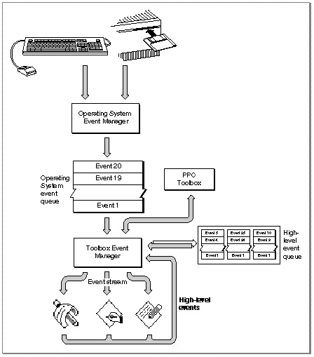

High-Level Events
The Event Manager provides routines that let applications communicate with each other by exchanging high-level events. A high-level event is an event that your application can send to another application to give it some information, to receive some information from it, or to have it perform some action.For example, your application can send a high-level event to another application instructing that application to perform a specific action, such as adding a row to a spreadsheet or changing the font size of a paragraph. Your application can also send a high-level event to another application requesting information from that application--for example, requesting a dictionary application to return the definition of a particular word. When you send a high-level event to another application, you can also include additional information or commands in an optional data buffer. For example, your application can use a high-level event to send a list of new words and definitions to a dictionary application.
Figure 2-4 on the next page shows three different applications communicating with each other by sending and receiving high-level events. The Event Manager uses the PPC Toolbox to transmit high-level events. The Event Manager maintains a high-level event queue for each application that has identified itself as capable of receiving high-level events. The high-level event queues are limited in size only by available memory.
- Note
- High-level events are available only in system software
version 7.0 or later.For effective communication between applications, your application must define the set of high-level events it responds to and let other applications know the events it accepts. By implementing the capabilities to send events to and receive events from other applications, you allow other applications to interact with your application and provide enhanced capabilities to your users.
Generally, there is no restriction on the type of processing that one application can request from another by sending it a high-level event. For a high-level event sent by one application to be understood by another application, however, the sender and receiver must agree on a protocol, that is, on the way the event is to be interpreted. Apple events are high-level events whose structure and interpretation are determined by the Apple Event Interprocess Messaging Protocol (AEIMP).
Your application should support the required Apple events, as described in Inside Macintosh: Interapplication Communication. The Finder uses the required Apple events to provide your application with information when it is opened and to give it the names of documents to open or print when the user opens or prints documents from the Finder.

In addition, you may want your application to support other common Apple events.
For example, the Edition Manager uses Apple events to communicate information
about document sections among the various applications that may publish sections
or subscribe to them. The Edition Manager sends the appropriate Apple events
to applications that want to maintain up-to-date subscriber sections within their documents. If a user alters a section of a document that has previously been published and updates the edition, the Edition Manager might post an Apple event to the application indicating that a new edition is available. The application receiving the Apple event can then update the subscriber or ignore the information, as the user dictates. For complete information on responding to Apple events sent by the Edition Manager, see the chapter "Edition Manager" in Inside Macintosh: Interapplication Communication.To ensure compatibility and smooth interaction with other Macintosh applications,
you should use the Apple event protocol for high-level events whenever possible.
You should define new protocols only if your application must communicate with applications on other computers that use different protocols or if your application
has other special needs. For complete information about Apple events and about implementing the required set of Apple events, see Inside Macintosh: Interapplication Communication.
- Note
- All Macintosh system software that sends or receives high-level events uses the Apple events protocol. u